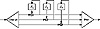

| Previous | Table of Contents | Next |
CFB—specifically 8-bit CFB—is generally the mode of choice for encrypting streams of characters when each character has to be treated individually, as in a link between a terminal and a host. OFB is most often used in high-speed synchronous systems where error propagation is intolerable. OFB is also the mode of choice if preprocessing is required.
OFB is the mode of choice in a error-prone environment, because it has no error extension.
Stay away from the weird modes. One of the four basic modes—ECB, CBC, OFB, and CFB—is suitable for almost any application. These modes are not overly complex and probably do not reduce the security of the system. While it is possible that a complicated mode might increase the security of a system, most likely it just increases the complexity. None of the weird modes has any better error propagation or error recovery characteristics.
With most modes, encryption of a bit (or block) depends on the encryption of the previous bits (or blocks). This can often make it impossible to parallelize encryption. For example, consider a hardware box that does encryption in CBC mode. Even if the box contains four encryption chips, only one can work at any time. The next chip needs the results of the previous chip before it starts working.
The solution is to interleave multiple encryption streams. (This is not multiple encryption; that’s covered in Sections 15.1 and 15.2). Instead of a single CBC chain, use four. The first, fifth, and every fourth block thereafter are encrypted in CBC mode with one IV. The second, sixth, and every fourth block thereafter are encrypted in CBC mode with another IV, and so on. The total IV is much longer than it would have been without interleaving.
Think of it as encrypting four different messages with the same key and four different IVs. These messages are all interleaved.
This trick can also be used to increase the overall speed of hardware encryption. If you have three encryption chips, each capable of encrypting data at 33 megabits/second, you can interleave them to encrypt a single 100 megabit/second data channel.
Figure 9.16 shows three parallel streams interleaved in CFB mode. The idea can also work in CBC and OFB modes, and with any number of parallel streams. Just remember that each stream needs its own IV. Don’t share.
Although block and stream ciphers are very different, block ciphers can be implemented as stream ciphers and stream ciphers can be implemented as block ciphers. The best definition of the difference I’ve found is from Rainer Rueppel [1362]:
Block ciphers operate on data with a fixed transformation on large blocks of plaintext data; stream ciphers operate with a time-varying transformation on individual plaintext digits.

Figure 9.16 Interleaving three CFB encryptions.
In the real world, block ciphers seem to be more general (i.e., they can be used in any of the four modes) and stream ciphers seem to be easier to analyze mathematically. There is a large body of theoretical work on the analysis and design of stream ciphers—most of it done in Europe, for some reason. They have been used by the world’s militaries since the invention of electronics. This seems to be changing; recently a whole slew of theoretical papers have been written on block cipher design. Maybe soon there will be a theory of block cipher design as rich as our current theory of stream cipher design.
Otherwise, the differences between stream ciphers and block ciphers are in the implementation. Stream ciphers that only encrypt and decrypt data one bit at a time are not really suitable for software implementation. Block ciphers can be easier to implement in software, because they often avoid time-consuming bit manipulations and they operate on data in computer-sized blocks. On the other hand, stream ciphers can be more suitable for hardware implementation because they can be implemented very efficiently in silicon.
These are important considerations. It makes sense for a hardware encryption device on a digital communications channel to encrypt the individual bits as they go by. This is what the device sees. On the other hand, it makes no sense for a software encryption device to encrypt each individual bit separately. There are some specific instances where bit- and byte-wise encryption might be necessary in a computer system—encrypting the link between the keyboard and the CPU, for example—but generally the encryption block should be at least the width of the data bus.
| Previous | Table of Contents | Next |
){kind=link}
){kind=link}